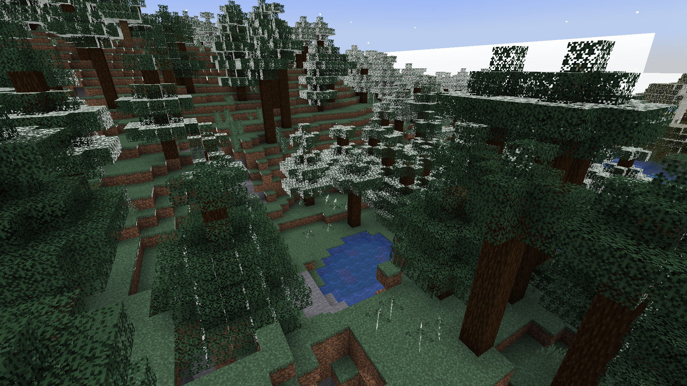
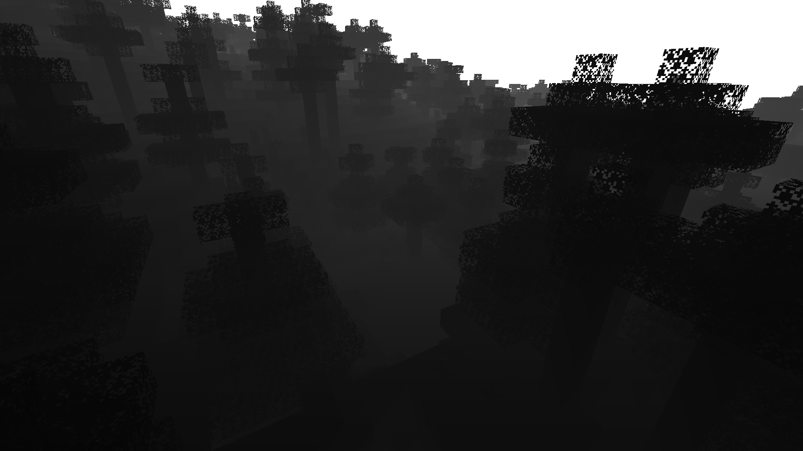

22wi CSE 455: ImgToChunk
Video Summary
Expectations
Explore any aspect of CV that interests you- Should probably include substantial coding of your own but I encourage you to also use outside libraries/frameworks (pytorch, tensorflow, opencv, etc.)
- Should be roughly equivalent in work to 2 homework in technical work/scope
- Deliverable: Your final project presentation will be a website describing your project, and a 2-3 minute video. This summary should mention the problem setup, data used, techniques, etc. It should include a description of which components were from preexisting work (i.e. code from github) and which components were implemented for the project (i.e. new code, gathered dataset, etc).
Initial Proposal
My final project is Minecraft map generation from timelapse videos using CNN based depth estimation techniques. To specify, I will train a supervised CNN-based monocular depth estimator that takes in a RGB image of a gameplay screenshot in Minecraft and produces the depth image of that scene with the same dimensions. I will follow the architecture proposed in a paper from 2014, Depth Map Prediction from a Single Image using a Multi-Scale Deep Network (https://arxiv.org/abs/1406.2283), which involves two relatively light-weight CNN models that predict the “global coarse-scale” and the “local fine-scale” features. The training and test data can easily be generated by using Replay Mod, which allows for capturing Minecraft renders in png sequences, and Shader Mod, which allows for custom shaders that can render grayscale depth view instead of the default RGB view.Problem Description
I will explain the general problem of single image depth estimation and how my specific problem of Minecraft image depth estimation.According to Mertan et al, single image depth estimation is the process of inferring depth information from a single 2D image. It is one of the hardest problems in depth estimation, because it does not make use of any temporal correlations (as in multi-image/video depth estimation), nor does it make use of any multi-view (stereo) information. According to Foley and Maitlin, humans do this naturally through the use of about 7 monocular cues such as occlusion (closer object covering farther object) or perspective (vanishing points and parallel planes).
The biggest challenge in single image depth estimation is considered to be prior knowledge about the geometry of the object: the shape and the size. Humans are great at recognizing objects, comparing them with previous knowledge of the object's size and shape, and putting it into perspective in a 3D space. Hence, many systems tackling this problem makes use of statistical or machine learning methods to learn this knowledge from data.
However, Minecraft does not have this challenge: all shapes and sizes are fixed. This greatly reduces the amount of "knowledge" the system would need to learn, as the system would only need to learn to recognize perspective cues. Furthermore, as all block will be aligned in a perfect grid, more spacial information can be inferred from the position of the blocks.
Prior Works
Single image depth estimation, like any other problems in computer vision, moved from hand-coded feature extractors from the early days to more neural network based models.One of the earliest works, Automatic Photo Pop-up by Hoiem et al from 2005 (https://dhoiem.cs.illinois.edu/publications/popup.pdf), use methods such as "difference of offset guassian" (DOOG) filters and parallel edge/line counts to detect surfaces, planes, and vanishing points from the viewer's point of view.
Shader Based Approach
My first approach was to use Shader Mod, a Minecraft mod that lets users attach custom shaders, to produce depth maps, grayscale images where the intensity of a pixel corresponds to its depth. Minecraft uses a old-school OpenGL shader system that saves the z-coordinates of the transformed coordinates into a texture called depthtex0, which can be sampled in the final fragment shader to produce the depth values. As these values were inverse scaled (so that it is more precise when closer and coarser when farther), these values had to be linearized.
